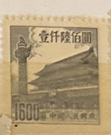
| SOURCE | TITLE| IMAGE MATCH | click to source page |
| ebid.net | China 1954 Gate of Heavenly Peace 1600 Used Stamp on eBid United States | 213883002 |  |
| eBay | PR China 1954 Sixth Issue $1600 MNG A19P57F497 | eBay | 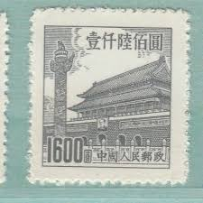 |
| eBay | China - 1954 Gate of Heavenly Peace, Beijing - 1,600 | eBay | 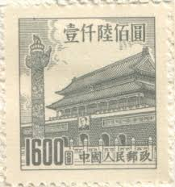 |
| Todocolección | china 1954 sello (*) - 9/48 - Buy Antique stamps of China on todocoleccion | 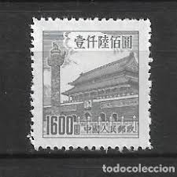 |
| Amazon.com | Amazon.com: China Stamps - 1954, R7, Scott 206-213 Regular Issue with Design of Tian An Men (6th Print), MNH, F-VF: Posters & Prints |  |
| Colnect | China, People's Republic : Stamps [Year: 1954] [1/4] : Colnect 📮 | 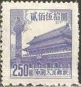 |
| Anyone interested ??1🙈🙊🙉👌 |  | |
| PicClick | CHINA - "GATE Of Heavenly Peace" - Lot Of 9 Old Stamps - Unused!! $1.99 - PicClick |  |
| Shutterstock | Karnalharyana India -july 15th 2025-closeup Postage Stock Photo 2695882073 | Shutterstock | 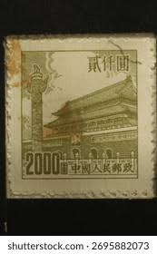 |
| Shutterstock | 3+ Thousand Beijing Stamp Royalty-Free Images, Stock Photos & Pictures | Shutterstock |  |
| eBay | 1950 china stamp tian an men 1600 Black | eBay | 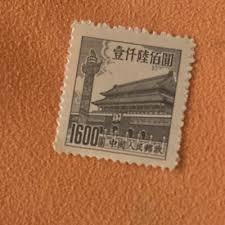 |
| eBay | Taiwan China ROC SC 211,213 NGAI (6fge) | eBay |  |
| eBay | China Gate | eBay | 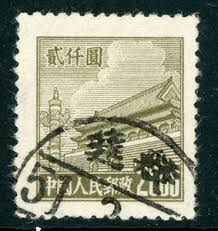 |
| eBay | 1954 PRC CHINA Sc# 206-212🔥MNG🔥GATE OF HEAVENLY PEACE🔥 ARCHITECTURE | eBay | 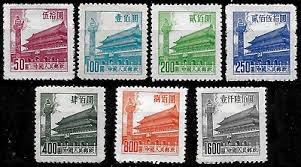 |
| Alamy | China postage stamp hi-res stock photography and images - Alamy |  |
| eBay | PR China 1954 Sixth Issue $400 Used A19P57F492 | eBay |  |
| Find Your Stamps Value | Value of 厦门外围包夜（约炮上门）联系方式维心安排加88236881联系方式维心-城市周边都可安排顶级女孩20250508JEHWKJHFKJNCXVNKNV.iqf stamps | 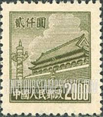 |
| eBay | People's Republic of China Scott #210 Mint No Gum As Issued | eBay | 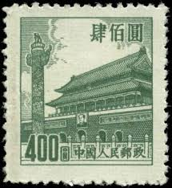 |
| eBay | China PRC R5 TIAN AN MEN $20000 Used nice cancellation | eBay | 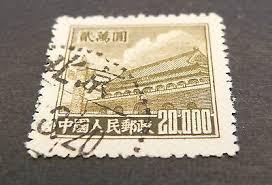 |
| eBay | PEOPLES REPUBLIC OF CHINA SCOTT 209 MNG VF - 1954 $250 ULTRA ISSUE | eBay | 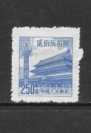 |
| eBay UK | 1950 china stamp tian an men $2000 unused | eBay UK | 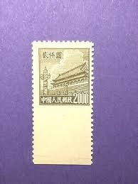 |
| eBay | PR China 1954 Sixth Issue $800 MNG A19P57F495 | eBay |  |
| eBay | 1954 CHINA SC#210 MNH NG VF🔥 GATE OF HEAVENLY PEACE🔥 | eBay |  |
| Find Your Stamps Value | NORTHEAST CHINA: Gate of Heavenly Peace - 中国东北: 东北贴用: 天安门$2000 Gray green stamp price, value |  |
| eBay | China (PR) #206-13 used | eBay | 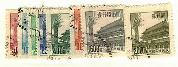 |
| eBay | People's Republic of China Scott #92 Used | eBay | 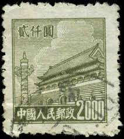 |
| eBay | 1950 CHINA LOT 7 Tiananmen Square STAMPS ( SOUV D4 ) LB19 | eBay | 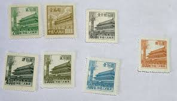 |
| eBay | Stamp China PRC 1954 R7 Tian An Men (6th Print) Set Block of 4 Set MNH. | eBay | 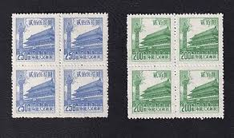 |
| eBay | China 1954 Scott #206-213 Gate of Heavenly Peace Peking Mint NH/Used | eBay |  |
| eBay | China - MNH Block of 4 Stamps.........................A-1020-x | eBay | 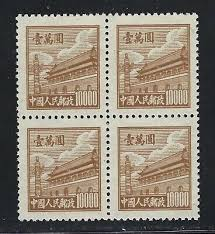 |
| eBay | TaiwanChina ROC SC 20 NGAI (5fge) | eBay |  |
| eBay | PR China 1954 Sixth Issue $400 Used A19P57F491 | eBay | 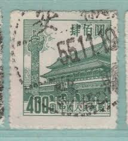 |
| eBay | 1954 CHINA SC#207 MNH NG🔥 GATE OF HEAVENLY PEACE🔥VF | eBay |  |
| eBay | PRC China Stamps: 1950 Gate of Heavenly Peace. 1st Issue SC 17 MNH, perf Fault | eBay |  |
| eBay | PRC China Stamp 1951 Sct#98 Tian An Men Definitive ￥50,000 yuan 1PC MNH | eBay | 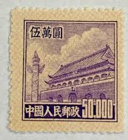 |
| Colnect | China, People's Republic : Stamps [Year: 1950] [1/11] : Colnect 📮 | 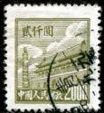 |
| lastdodo.com | Gate of heavenly peace 3000 (1951) - China - People's Republic - LastDodo |  |
| eBay | China Stamps - 中国邮票-1950, R2 Scott 23天安门设计第二次印刷, 6格,MNH-VF | eBay | 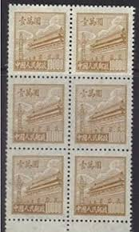 |
| eBay | PRC China Stamps: 1954 Gate of Heavenly Peace. 6th Issue SC 209 Block 8, Faults | eBay | 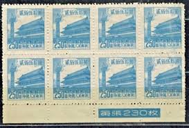 |
| eBay | 1950 PRC China Sc#88 USED VF | eBay | 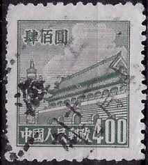 |
| eBay | China 1954 Scott #206-213 Gate of Heavenly Peace Peking Mint NH/Used | eBay | 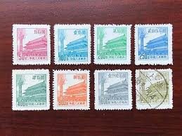 |
| Find Your Stamps Value | NORTHEAST CHINA: Gate of Heavenly Peace - 中国东北: 东北贴用: 天安门$20000 Deep brown stamp price, value | 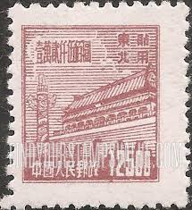 |
| eBay | One China Stamp | eBay |  |
| eBay | CHINA PRC 1951 Sc#95-98 R5 $10000-$50000 Tin An Men Gate MNH XF | eBay | 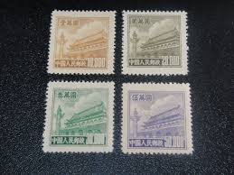 |
| eBay | People's Republic of China Scott #20 Used | eBay |  |
| eBay | People's Republic of China Scott #20 Mint No Gum As Issued | eBay | 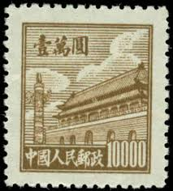 |
| Alamy | Beijing history illustration hi-res stock photography and images - Page 3 - Alamy | 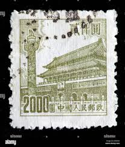 |
| eBay | China PRC Stamps: 1950-1, SC88, 90, 92 . Used | eBay |  |
| eBay | 1950 China R5 Sc#95 Regular Issue with Design of Tian An Men MNG VF | eBay | 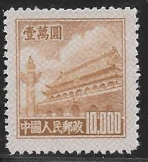 |
| eBay.de | PR China R3 Regular Definitive Tian An Men-3rd Print, R5-5th Print, R8 普3,普5,普8 | eBay.de | 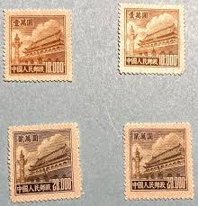 |
| Xabusiness.com | R2 Scott 21-23 Regular Issue with Design of Tian An Men(2nd Print) - China Stamps | 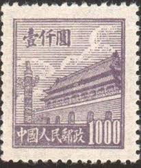 |
| eBay | CHINA Tien An Men gate, PRC, 3 SHADES 10000, 1950's MNH, NO GUM | eBay | 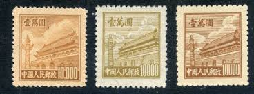 |
| eBay | 1950 china stamp tian an men 3000 Red | eBay | 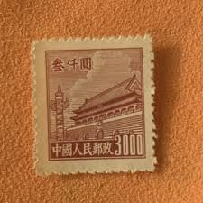 |
| eBay | PRC China 209 MH | eBay | 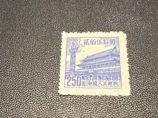 |
| eBay | China - North East China - 1950 Tiananmen - Gate of Heavenly Peace - 10,000 | eBay |  |
| eBay | Ryukyu Islands 3XR7 Miyako Provisional Stamp (Lot RY Bx 2811) | eBay | 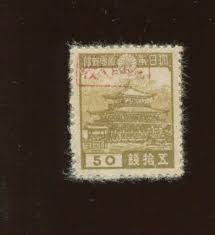 |
| Amazon.com | 1950 PRC RARE 1950 COMMUNIST CHINA GATE of HEAVENLY PEACE STAMPS (SET of 4) RARE 1950 COMMUNIST CHINA GATE of HEAVENLY PEACE STAMPS (SET of 4) Seller Mint State at Amazon's Collectible Coins Store | 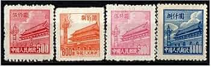 |
| eBay | China PRC Sc 16 Dull Violet $1000 UR Plate No. 465 Block of 4 No Gum As Issued | eBay | 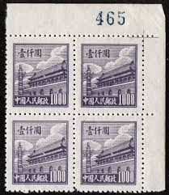 |
| eBay | China 1950 Scott #95 Gate of Heavenly Peace Mint NH | eBay | 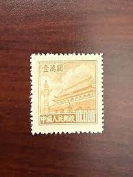 |